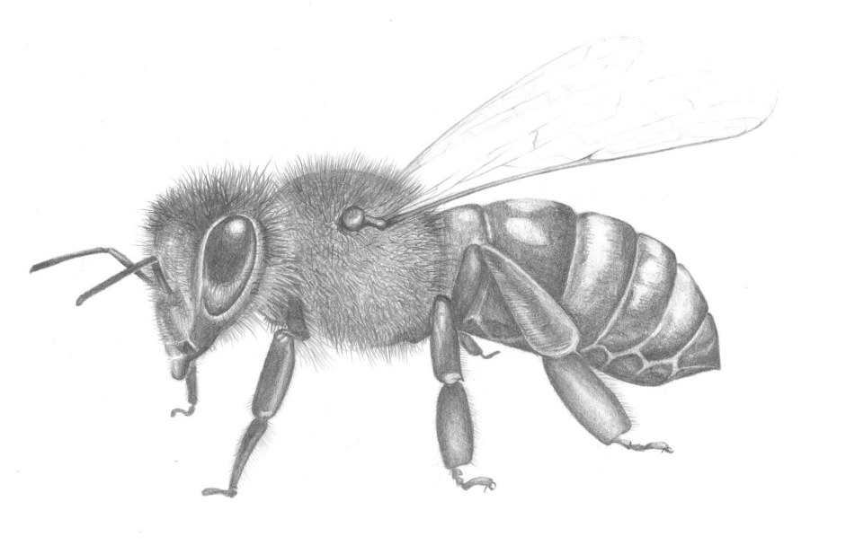
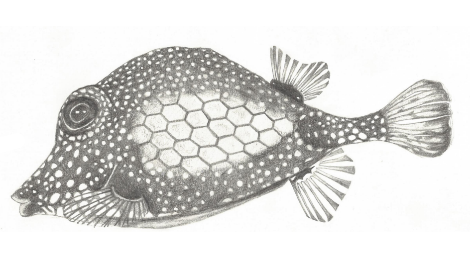

Abies nebrodensis o abeto del Nebrodi (en italiano: abete delle Madonie y en idioma siciliano: abete dei Nèbrodi) es una especie arbórea de la familia de las pináceas, endémico de Sicilia.En el año 1900 este endemismo de la cadena montañosa septentrional de Sicilia fue considerado extinto. Fue redescubierto, en 1957, en el Valle "Madonna degli Angeli" en la Madonia, donde se encontraron una treintena de ejemplares, sobreviviendo probablemente gracias al aislamiento y a la menor competitividad de otras especies locales más fuertes.

Apies mellifera
La abeja europea (Apis mellifera), también conocida como abeja doméstica o abeja melífera, es una especie de himenóptero apócrito de la familia Apidae. Es la especie de abeja con mayor distribución en el mundo.

Lactophyrs triqueter, smooth trunkfish
El pez cofre es una especie de peces de la familia Ostraciidae en el orden de los Tetraodontiformes.
Acuarela
Araschnia levana
Lepidóptero ropalócero de la familia de los Nymphalidae. Esta especie se caracteriza por su marcado dimorfismo estacional: los adultos de la primera generación (primavera) presentan coloraciones naranja (forma levana), mientras que los de la segunda generación (verano) tienen coloraciones negras (forma prorsa).
Tinta china
Vespa velutina
La avispa asiática es una especie de avispa de la familia de los véspidos originaria del sudeste asiático. Esta avispa, al igual que otras de su género, se alimenta de insectos (abejas, hormigas, mariposas, pulgones, etc.) y otros invertebrados.
Gouache
Merluccius merluccius
La merluza europea, pescada, pescadilla o pijota es un pescado blanco y de agua salada de la familia de los merlúcidos, distribuida por las costas de casi toda Europa y el norte de África.